François Couperin · Paris, 1717 · L'Art de toucher le Clavecin
François Couperin (Paris, 1668 — 1733), "o grande", é a mais
importante figura musical na França entre Lully e Rameau. Seu método, publicado entre o
Primeiro e o Segundo Livro de Peças, é "leitura obrigatória" para quem se dedica ao
cravo.
📖 Esta edição
A presente tradução baseia-se na edição definitiva de 1717 — em relação à primeira (1716),
inclui novo frontispício, seis páginas suplementares e modificações textuais. Couperin
mistura tratado pedagógico com reflexões íntimas sobre a vida do mestre de cravo.
Audição recomendada — integral por Christophe Rousset
"O Método que apresento aqui é único e não tem nenhuma relação com a
Tablatura, que é meramente uma ciência de
números. Aqui lido com todos os aspectos do bom toque ao Cravo. [...] Há ainda um caminho
infinito entre a Tablatura e a maneira de se tocar bem."
— Couperin, prefácio
Couperin avisa: este não é um manual técnico — é um livro sobre como tocar bem.
Anuncia cinco partes:
A posição do corpo e das mãos.
Os ornamentos que servem à execução.
Pequenos exercícios preliminares e essenciais.
Observações sobre dedilhado, com referência ao Primeiro e Segundo Livros.
Oito Prelúdios diversificados, em ordem de dificuldade, com dedos numerados.
Parte 1
Posição do corpo e das mãos
Idade para começar
"A idade apropriada para iniciar as crianças é de seis a sete anos: não que isso deva excluir
as pessoas mais velhas, mas, naturalmente, para dar forma às mãos no exercício do Cravo,
quanto mais cedo melhor."
Postura ao instrumento
Antebraço, pulso e dedos nivelados; cadeira que permita isso.
Sob os pés das crianças, um suporte para que não fiquem suspensos.
Distância do teclado para um adulto: cerca de 22,5 cm a partir da cintura.
Centro do corpo coincidindo com o centro do teclado.
Virar o mínimo possível à direita; pés lado a lado, sobretudo o pé direito bem para fora.
Não fixar o olhar; "olhe as pessoas presentes à volta como se não estivesse ocupado com qualquer outra coisa".
Não marcar o compasso com a cabeça, corpo ou pés.
💡 Dica de Couperin para crianças
"Para mim, na iniciação das crianças, levo por precaução a chave do instrumento no qual
as instruo, a fim de que, na minha ausência, elas não possam estragar em um só instante o
que cuidadosamente ensinei durante três quartos de hora."
O instrumento certo
"Deve-se usar inicialmente uma Espineta ou
um só teclado do Cravo na primeira infância, e que tanto um quanto o outro tenham seus
plectros regulados muito suavemente. [...] A
boa execução depende muito mais da flexibilidade e da grande liberdade dos dedos do que
da força."
O cravo acoplado (com os dois teclados unidos) exige mais força — perigoso
para a criança, que "forçará suas pequenas mãos para fazer falar as teclas", levando a "mãos
mal colocadas e dureza do toque".
"É necessário utilizar preferencialmente os menos capazes [dedos], sem ter consideração à antiga maneira de dedilhar, que deve ser abandonada em favor do modo de se tocar bem dos dias de hoje."
Sobre tablatura e memória
"Não se deveria começar a ensinar Tablatura para as crianças até que tenham um certo número de Peças nas mãos. [...] A memória forma-se bem melhor quando se aprende de cor."
Sobre flexibilidade
"As mãos das mulheres são geralmente melhores. [...] A flexibilidade dos nervos contribui muito mais para se tocar bem do que a força."
Parte 4
Maneira de escolher o dedilhado
Couperin estabelece a numeração que ele próprio classificou como diferente de seu costume:
Numeração dos dedos
Mão esquerda:
54321
|
Mão direita:
12345
Polegar = 1, mínimo = 5. Convenção que perdura até hoje.
"Conhecer-se-á pela prática o quanto a mudança de um dedo por outro sobre a mesma nota
será útil, e que efeito de legato isso causa
no tocar."
A substituição de dedos sobre a mesma nota é, para Couperin, uma das chaves
do legato moderno. Ele a usa sistematicamente para conectar trinados encadeados.
Reflexão central
Aspiração e suspensão — dar alma ao cravo
"Sendo os sons do Cravo fixos, cada um individualmente, e por consequência sem poderem ser
aumentados nem diminuídos, pareceu quase insustentável até o momento que se pudesse dar
alma a esse instrumento."
A questão fundadora: como ser expressivo num instrumento que não tem dinâmica?
A resposta de Couperin é original e modernista:
Aspiração aspiration
Separação de uma nota — uma micro-pausa expressiva. Mais intensa em passagens leves e rápidas, mais sutil em passagens doces e lentas.
Suspensão suspension
Silêncio antes de uma nota — quase exclusivamente em peças doces e lentas. "O silêncio que precede a nota deve ser orientado pelo gosto da pessoa que executa."
"Esses dois ornamentos, por seu contraste, deixam o ouvido incerto, de sorte que nas
ocasiões em que os instrumentos de arco aumentam seus sons, a suspensão dos sons do Cravo
parece — por um efeito contrário — trazer ao ouvido a impressão desejada."
"É o valor das notas que deve, em geral, determinar a duração dos
mordentes duplos,
das apogiaturas duplas
e dos trinados."
Mordente pincé
"Todo mordente deve terminar na nota sobre a qual está colocada." Os batimentos e a nota final estão todos contidos no valor da nota principal. No cravo e no órgão, exerce a função do martèlement dos instrumentos de arco.
Apogiatura port-de-voix
Composta de duas notas de valor e uma pequena nota perdida. Couperin defende a maneira moderna (com mudança de dedo) sobre a antiga, por causar mais legato.
Trinado tremblement
Compõe-se de três objetos: (1) apoio sobre a nota acima da principal; (2) batimentos; (3) ponto de parada. Deve "começar mais lentamente do que terminam, mas essa gradação deve ser imperceptível".
★ Regra do trinado
"Não importa sobre que nota esteja marcado um trinado; deve-se sempre começá-lo sobre o
tom ou sobre o semitom acima." — Esta regra foi padrão até cerca de 1800.
Tabela original dos ornamentos (1713)
A tabela completa de ornamentos do Primeiro Livro de Peças, em fac-símile da edição original
de 1713. Clique para ampliar.
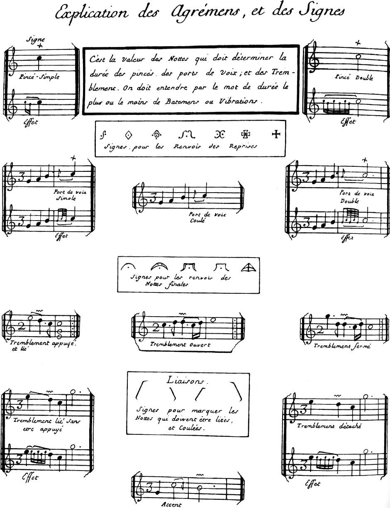
Tabela de ornamentos · parte 1↗ clique para ampliar
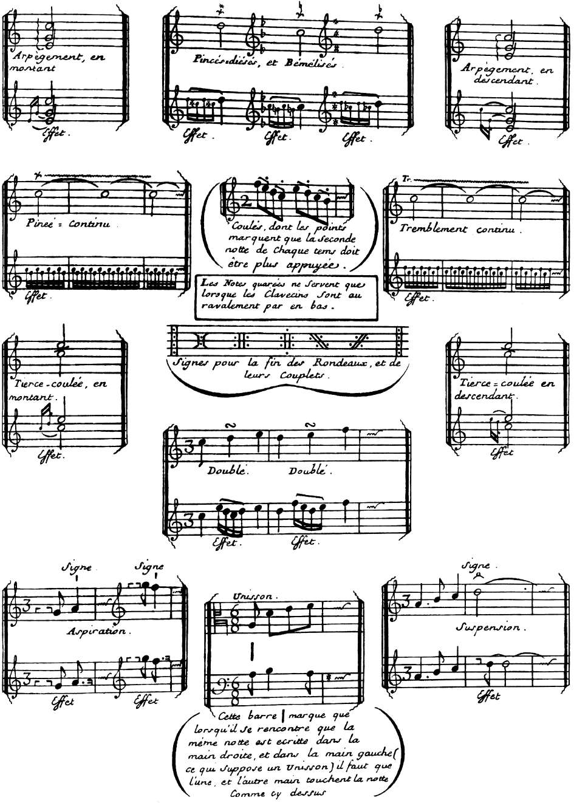
Tabela de ornamentos · parte 2↗ clique para ampliar
Os trinados de cada dedo
Trinados mais utilizados
Mão
Dedos
Direita
3 com 2, e 4 com 3
Esquerda
1 com 2, e 2 com 3
"Será muito útil poder estimular as pessoas jovens a fazer os trinados com todos os dedos."
Couperin recomenda que se exercitem progressões em todos os tons e semitons do teclado:
3
Progressões de terças
Ascendentes e descendentes — fundamentais para escalas.
4
Progressões de quartas
Ascendentes e descendentes.
5
Progressões de quintas
Ascendentes e descendentes.
6
Progressões de sextas
Em todos os tons e semitons do teclado.
7
Progressões de sétimas
Inclui maneira mais cômoda para tons com sustenidos e bemóis.
8
Progressões de oitavas
Para ambas as mãos.
Os exemplos musicais — fac-símile
Couperin notou esses exercícios em todos os tons. Os exemplos abaixo são fac-símiles do
tratado original. Clique para ampliar.
Exemplo · Progressão de terças ascendentes (mão direita)
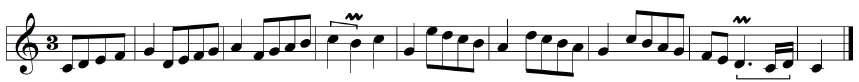
Compasso 3/8 · escalas em terças subindoExemplo · Progressão de quartas (mão direita)
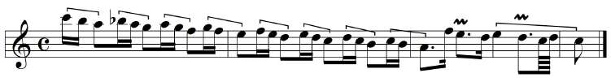
Quartas ascendentes e descendentes — escala "rolando"Exemplo · Quintas e sextas — fingering anotado
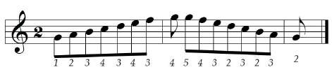
Compasso 2 · dedilhado original anotado: 1-2-3-4-3-4-3-4 e variaçõesExemplo · Sextas em compasso ternário
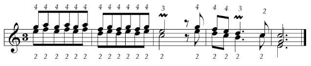
3/4 com sextas reiteradas: 4 sobre 2 em sequênciaExemplo · Sétimas para a mão esquerda
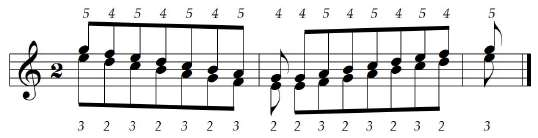
Padrão 5-4-5-4... e 3-2-3-2... em paraleloExemplo · Trinados encadeados (substituição de dedos)
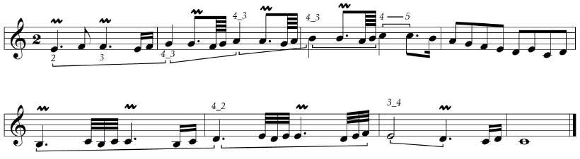
Couperin: "Esses dois números sobre uma mesma nota assinalam a substituição de um dedo por outro" — 4_3, 3_4, 4_2
Terças ligadas: maneira antiga vs. moderna
★ Antiga vs. moderna
Maneira antiga de várias terças consecutivas: "não produz nenhum legato".
Maneira moderna: liga as terças por substituição de dedos sobre uma mesma nota.
"Estou persuadido de que poucas pessoas em Paris permanecem irredutíveis a respeito de velhos princípios, sendo Paris o centro do que é bom."
A Alemanda — peça de transição para as primeiras peças idiomáticas
Na Parte 3, Couperin introduz uma Alemanda "légèrement" que ele
compôs especialmente para o método — pensada como ponte entre os exercícios e as peças
reais dos Livros I e II.
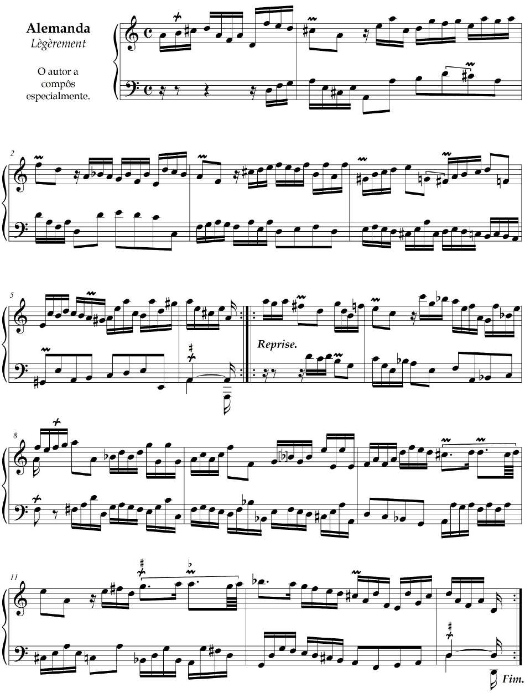
Alemanda · "O autor a compôs especialmente"↗ clique para ampliar
O experimento dos dois trinados simultâneos
"Um dia, ao fazer uma jovem pessoa exercitá-las, experimentei deixá-la tocar os dois trinados
ao mesmo tempo com a mesma mão. A aptidão natural, as excelentes mãos e a grande maestria
adquirida, a fez chegar ao ponto de tocá-las muito regularmente."
Couperin oferece dedilhados específicos para passagens "espinhosas" de suas próprias peças.
As peças mencionadas — todas disponíveis em gravações modernas:
Peças do Primeiro Livro
★ Princípio para escolha de dedilhado
"Como a 2ª e a 4ª dessas quatro notas ligadas são as que fazem supor a verdadeira harmonia
em relação ao baixo, faz-se necessário que elas sejam tocadas com os mesmos dedos, como
se o canto fosse simples e sem notas de intervalo."
O dedilhado revela a estrutura harmônica subjacente. Notas que pertencem à harmonia recebem
os mesmos dedos das notas principais, marcando-as auditivamente.
Trechos do Segundo Livro — exemplos com dedilhado
Couperin oferece exemplos detalhados de dedilhado para passagens difíceis das peças do
Segundo Livro. Os exemplos abaixo são fac-símiles diretos do tratado:
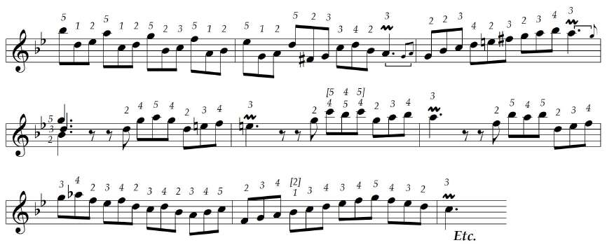
Les Bergeries · trecho com dedilhado completo
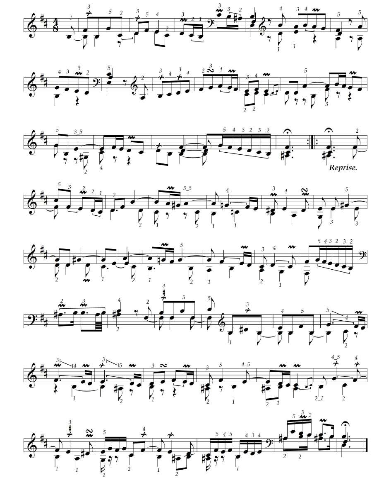
Trecho extenso · dedilhado em compasso 4/8
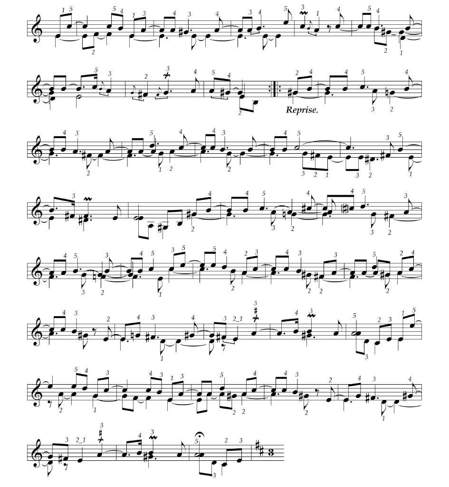
Outro trecho · página 99
Peças do Segundo Livro
Parte 5
Os oito Prelúdios
"Prelúdio é uma composição livre em que a
imaginação se entrega a tudo que a ela se apresenta. Mas, como é muito raro encontrar gênios
capazes de criar de improviso, é preciso que aqueles que recorram a esses Prelúdios
escritos os toquem de uma maneira natural, sem se ater excessivamente à precisão do tempo;
a menos que eu o tenha indicado explicitamente pela palavra Mesuré."
Couperin compôs oito Prelúdios nas tonalidades das peças de seus Livros I e II.
Os quatro primeiros são curtos (uma página); os outros quatro têm o dobro do tamanho.
"Pode-se arriscar afirmar que, dentre muitos assuntos, a Música, em comparação à Poesia,
tem sua prosa e seus versos."
Observações entre os Prelúdios
"Ainda que esses Prelúdios tenham sido escritos metricamente, existe, entretanto, um estilo
de utilização que deve ser seguido. Eu me explico: Prelúdio é uma composição livre
em que a imaginação se entrega a tudo que a ela se apresenta. Mas, como é muito raro
encontrar gênios capazes de criar de improviso, é preciso que aqueles que recorram a esses
Prelúdios escritos os toquem de uma maneira natural, sem se ater excessivamente à
precisão do tempo; a menos que eu o tenha indicado explicitamente pela palavra
Mesuré."
— Couperin, observações entre os Prelúdios
"Uma das razões pelas quais esses Prelúdios foram escritos metricamente é a facilidade que
se encontrará, seja ao ensiná-los ou a aprendê-los."
Conclusão sobre como tocar o Cravo
Couperin encerra a seção dos Prelúdios com uma síntese de toda a sua estética para o
instrumento:
"Para concluir a respeito de como tocar o Cravo, de um modo geral, meu sentimento é de que
não se deve se afastar do caráter que convém a esse instrumento: as
passagens, as baterias que estejam nas mãos; as partes alaudadas e sincopadas, que devem ser
preferidas àquelas que são cheias de ligaduras ou de notas demasiadamente graves. É preciso
conservar um legato perfeito naquilo que se
executa; que todos os ornamentos sejam bem precisos e que aqueles que são compostos de
batimentos sejam feitos bem regularmente,
e através de uma gradação imperceptível. Deve-se tomar cuidado para não se alterar
o tempo nas Peças, quando determinado, e para não se permanecer sobre notas cuja duração
tenha terminado. Enfim, que se crie sua execução segundo o
bom gosto de hoje, que é incomparavelmente mais
puro que o antigo."
— Couperin, conclusão geral sobre o cravo
Caráter próprio do cravo — passagens, baterias, partes alaudadas e sincopadas.
Legato perfeito.
Ornamentos precisos, com gradação imperceptível.
Não alterar o tempo nas peças quando determinado.
Não se permanecer sobre notas cuja duração já terminou.
O bom gosto de hoje — incomparavelmente mais puro que o antigo.
Os 8 Prelúdios em fac-símile
Com dedilhados marcados pelo próprio Couperin. Clique para ampliar.
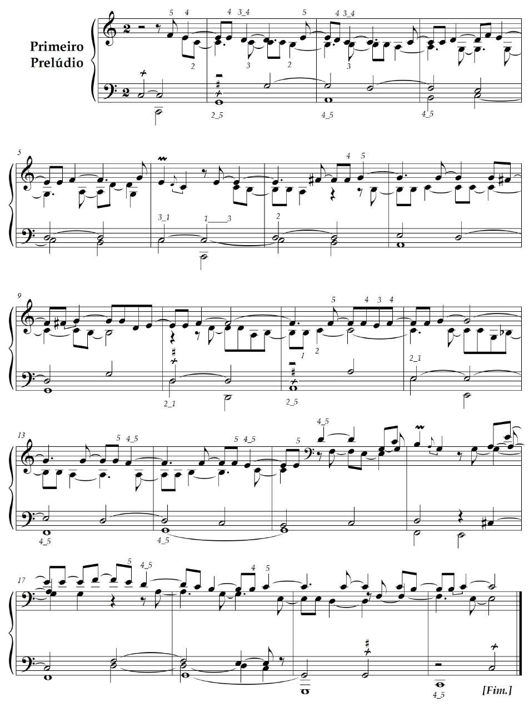
Primeiro Prelúdio
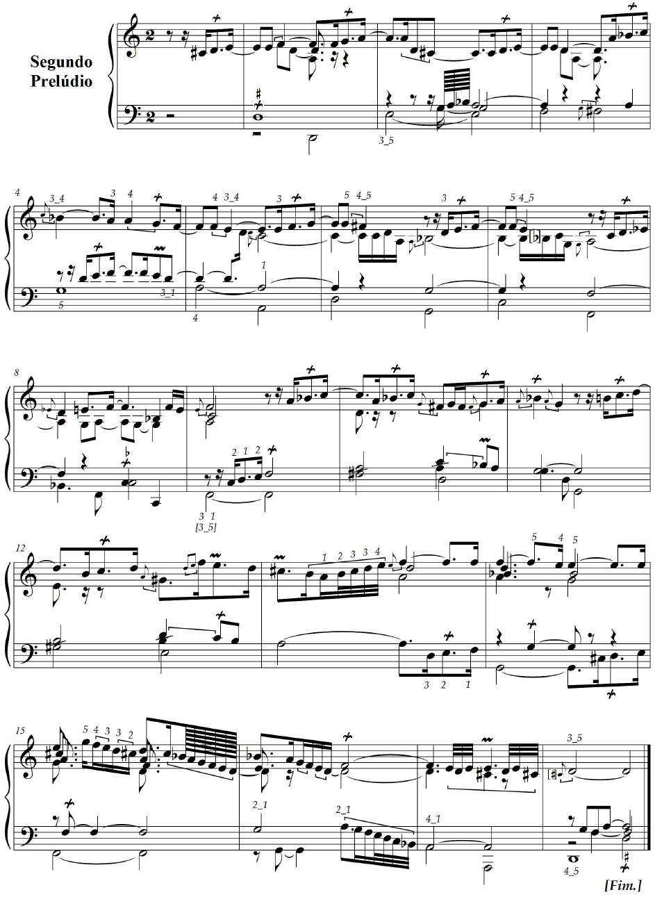
Segundo Prelúdio
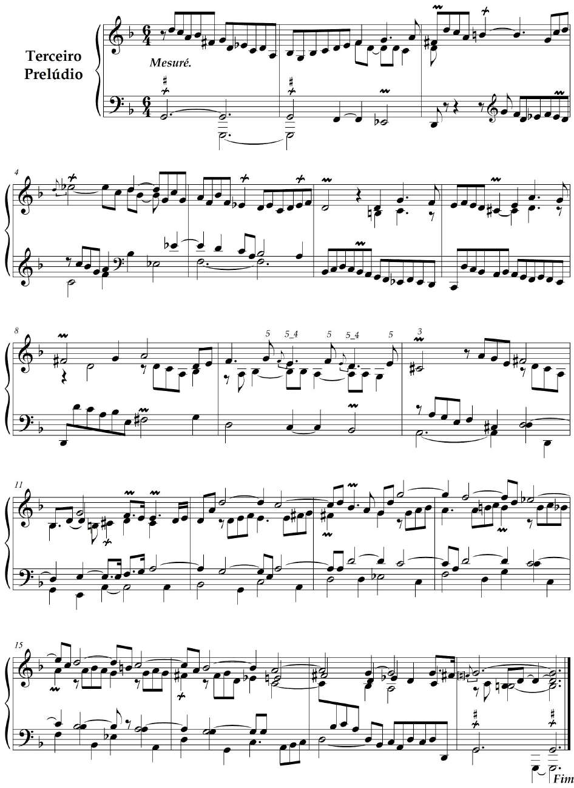
Terceiro Prelúdio
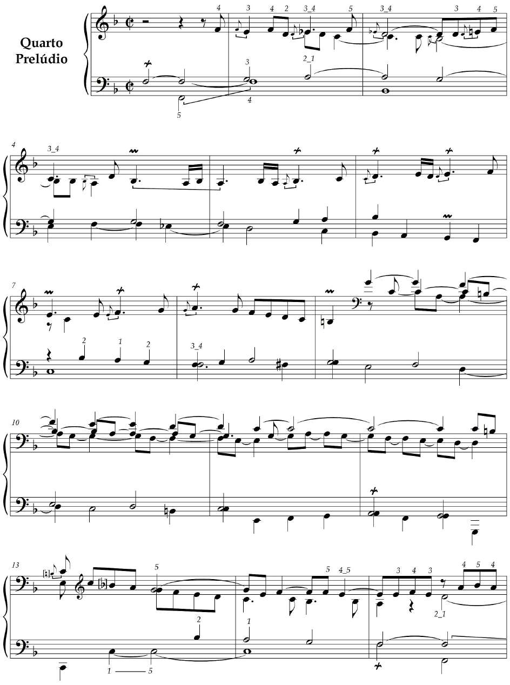
Quarto Prelúdio
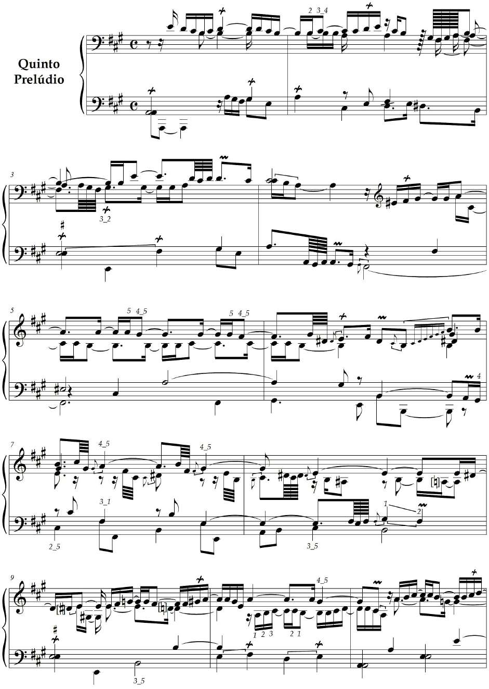
Quinto Prelúdio
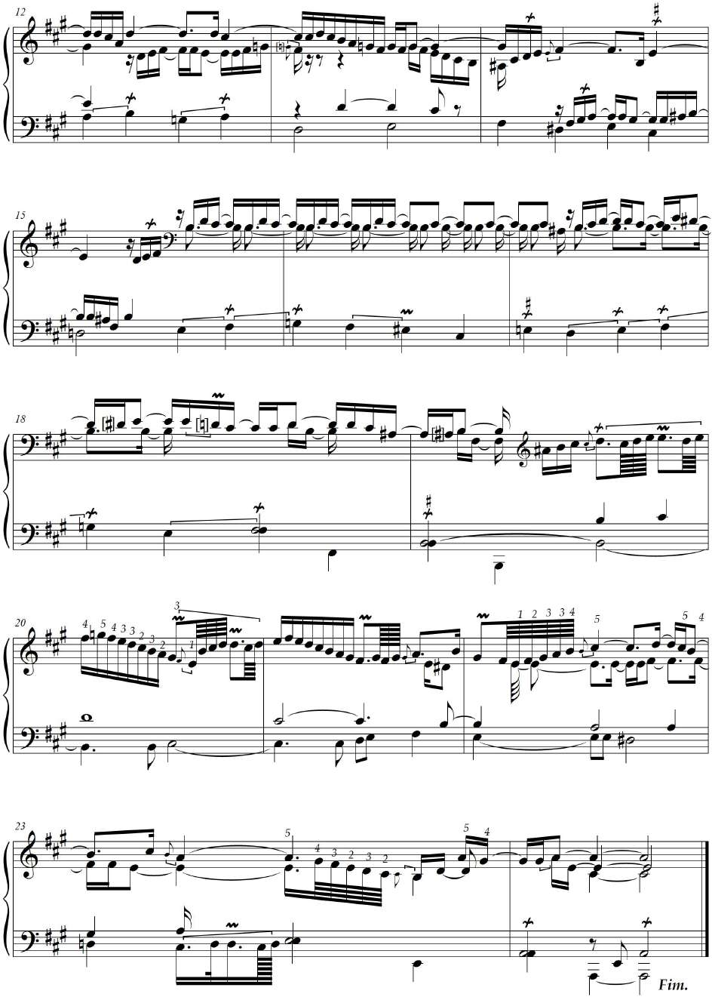
Sexto Prelúdio
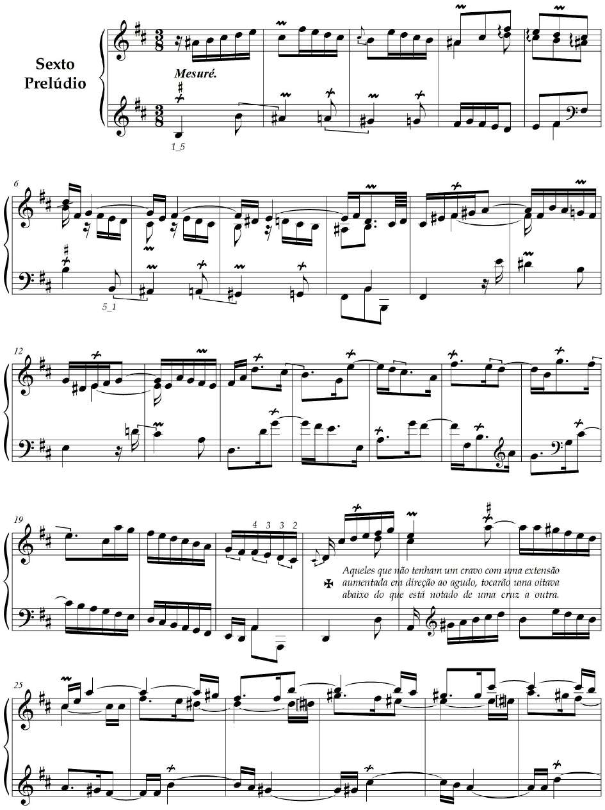
Sétimo Prelúdio
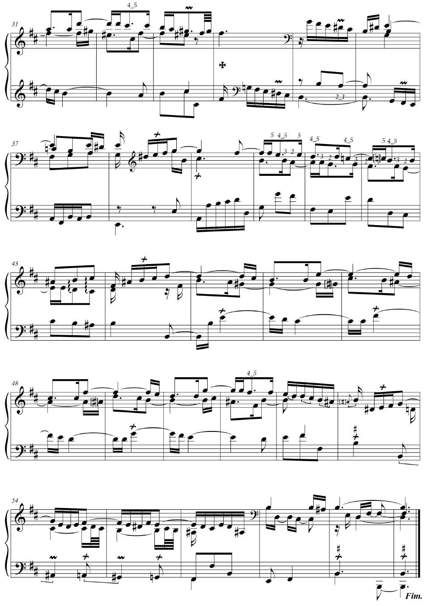
Oitavo Prelúdio
Os 8 Prelúdios em gravação — 5 interpretações por Prelúdio
1º Prelúdio · Dó maior
2º Prelúdio · Ré menor
3º Prelúdio · Sol menor
4º Prelúdio · Fá maior
5º Prelúdio · Lá maior
6º Prelúdio · Si menor
7º Prelúdio · Si bemol maior
8º Prelúdio · Mi menor
Reflexão final
O cravo, as Sonatas e o bom gosto francês
Couperin meditou longamente sobre a relação do cravo com o estilo italiano emergente:
"Esse instrumento tem suas particularidades, assim como o Violino tem as suas. [...] Se o
Cravo não pode fazer crescer seu som, [...] há, por sua vez, outras vantagens que são a
precisão, clareza, brilho e a extensão."
Compasso e cadência
★ Distinção fundamental
Compasso = "a quantidade e a igualdade dos tempos".
Cadência = "precisamente, o espírito e a alma que a ele devem ser combinados".
"Confundimos compasso com o que se chama de cadência ou movimento."
É por essa "alma" — irredutível à notação — que os franceses indicam Tendrement, Vivement
no início das peças. Couperin lamenta:
"Existem defeitos em nossa maneira de escrever música que correspondem à maneira de escrever
nossa língua. O fato é que nós escrevemos de modo diferente daquele que executamos. Isso é
o que faz com que os estrangeiros toquem nossa música menos bem do que nós a sua."
A famosa indicação prática para as colcheias notadas iguais:
"Por exemplo, nós pontuamos várias colcheias consecutivas por graus conjuntos, entretanto,
nós as indicamos iguais. Submetemo-nos a esta prática e assim continuamos."
Esta é a base teórica das notes inégales francesas — as colcheias por graus
conjuntos são notadas iguais mas executadas pontuadas.
Sobre o acompanhamento
"Deve-se esperar dois ou três anos antes de se aprender o acompanhamento. [...] A vivacidade
com a qual se está inclinado a executar a música de abertura do Livro traz consigo um jeito
de tocar firme e frequentemente pesado."
As notas críticas anotam pequenas correções e divergências entre os exemplos
apresentados no método e suas edições originais nos Livros de Peças. Indicam:
compasso, parte afetada (MD = mão direita, ME = mão esquerda, voz),
número da nota modificada e a correção.
★ Como ler as notas críticas
Exemplo: 8, MD, 2ª voz, 4: ré em substituição ao mi sustenido
= compasso 8, mão direita, contralto, nota 4: ré em substituição ao
mi sustenido.
Os exemplos extraídos do Primeiro e
Segundo Livros de Peças foram, em caso de dúvida, comparados com suas edições originais
(Premier livre de pièces de clavecin. Paris: Chez l'Auteur, Boivin, 1713;
Second livre de pièces de clavecin. Paris: chez l'auteur, Foucault, 1717).
Trechos do Primeiro Livro
Página
Compasso · parte · nota
Correção
p. 66, 1º exemplo
3, –, –, 8
semicolcheia em substituição à colcheia
p. 67, 6º exemplo
5, –, –, acorde
mínimas pontuadas em substituição às mínimas
p. 75, 2º exemplo
4, MD, 1ª voz, 1 e 4
semínima pontuada e colcheia (em substituição à semínima)
p. 76, 1º exemplo
2, MD, 2ª voz, 1
lá incluído a partir do Primeiro Livro de Peças
p. 76, 2º exemplo
4, ME, 1ª voz, 1
colcheia pontuada em substituição à semínima
p. 77, 2º exemplo
2 e 3, –, –, –
pausa de colcheia no 1º tempo (em substituição à pausa de semicolcheia)
p. 77, 2º exemplo
7, –, –, 9
semínima com trinado em substituição à semínima pontuada
p. 77, 2º exemplo
7, –, –, 10 e 11
semicolcheias em substituição a colcheias
Os 8 Prelúdios
Prelúdio
Compasso · parte · nota
Correção
Prelúdio 1 (p. 79)
16, ME, 1ª voz, –
pausa de semínima no 2º tempo (em substituição à pausa de colcheia)
Prelúdio 2 (p. 80)
5, MD, 2ª voz, 5 e 6
falta colchete de expressão
Prelúdio 3 (p. 81)
16, ME, 2ª voz, 4
dó bequadro em substituição ao si bemol
Prelúdio 5 (p. 84)
19, ME, 2ª voz, 2
si em substituição ao dó sustenido
Prelúdio 6 (p. 86)
fórmula de compasso
3/8 em substituição a 3/8 (correção de notação)
Prelúdio 8 (p. 92)
19 a 22, ME, –, 4
ponto de aumento criando efeito de pedal de dedo
Trechos do Segundo Livro
Página
Compasso · parte · nota
Correção
p. 95, 1º exemplo
20, –, 1ª voz, 4 e 5
duas semicolcheias em substituição a duas colcheias
p. 95, 1º exemplo
47, –, 2ª voz, 1
semicolcheia em substituição à colcheia
p. 95, 1º exemplo
40, –, 2ª voz, –
pausa de semínima incluída a partir do Segundo Livro
p. 95, 1º exemplo
44, –, 1ª voz, 2
sustenido sobre o mordente, incluído a partir do Segundo Livro
p. 96, 5º exemplo
fórmula omitida
em substituição a 2/4, por se tratar de exemplo extraído do meio da peça
p. 97, 1º exemplo
9, –, 1ª e 2ª voz, 1
dedo 2 deduzido (embora pouco nítido)
p. 97, 1º exemplo
17, –, 2ª voz, 2 e 3
ligadura incluída a partir do Segundo Livro
p. 97, 1º exemplo
20, –, 2ª voz, 3
semínima em substituição à colcheia
p. 98, 5º exemplo
1, –, 1ª voz, 3
semicolcheia em substituição à colcheia
Total: 23 correções editoriais aplicadas pela equipe de tradução UFRJ ao longo dos exemplos e Prelúdios do método, em comparação com os Livros de Peças originais.
Apêndice
Tabela de ornamentos do Primeiro Livro (1713)
O Primeiro Livro de Peças (1713) trouxe uma tabela explicativa dos ornamentos e sinais usados
por Couperin. Esta tabela deve ser consultada em paralelo com qualquer execução das peças,
pois muitos sinais são particulares à grafia do compositor.
⊕
Tabela completa de ornamentos
Veja a página dedicada que cataloga todos os ornamentos com exemplos visuais e cruzamentos
com Sancta Maria, Frescobaldi e Rameau.